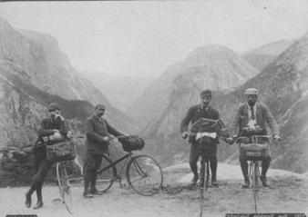

"...in his brain, which is as dry as the remainder biscuit after a voyage, he hath strange places cramm'd with observation, the which he vents in mangled forms." Wm. Shakespeare, As You Like It.

Burnout, Wheelie, and two unidentified companions
on an earlier expedition for the Society.
During the demolition of the ruins of an old Theosophist tea house in Baltimore, a collection of documents was found that shed new light on the strange history of Dr. Phineas Burnout and Wilhelm ``Papa'' Wheelie, who along with the mysterious Roy D. were instrumental in the founding of C.H.U.N.K. 666. Apparently, before the Theosophists acquired the building, it was the headquarters for the Wheeled Exploration Society, within which Burnout and Wheelie were renowned for their fearless adventuring spirit and amazing accounts of strange lands and cultures. Until this find, little was known about their 1889 expedition to the Mongolian steppe, even though as far as the historical record shows, neither gentleman ventured beyond the shores of America afterward. The Society archives simply cease to mention either of the pair.
The writings of Burnout himself show a desire for this account to remain secret. In his cover letter to the Secretary and Archivist of the Society, he mentions that it was only due to his obligation to the sponsors of the voyage that he sent word back to the States at all. He writes that "an extremely odd tragedy has occurred which I am hesitant to commit to paper, lest my sanity be brought into question." Although he admits that "traveling from eastern Europe to Mongolia by bicycle did of course come with its share of hardships, but we braved nothing that was beyond the abilities of two seasoned adventurers such as ourselves... even the vast expanses of the steppe were slowly being conquered by the steady progress of our wheels," he emphatically recommends that no further wheelmen explore north of the Gobi.
| July 12, 1889. |
We were lounging by the fire after dinner, in the tent of the local tribal chieftain. After several cups of fermented yak's milk - very delicious once the taste is acquired, and quite intoxicating - the nomadic leader became more and more effusive in his praises of our skill in riding our bicycles over the roadless expanses. We were by then used to curiosity about our machines, for the nomads near the Gobi do not make use of the wheel, preferring instead to carry their belongings on sledges and saddlebags. This man, however, did not view our bicycles as amazing and hithertofore unknown machines. He had a name for them in the local dialect, and claimed to know of a tribe to the North which constructed and used their own versions! The praise directed towards us was not for our unique inventions, but for our spiritual hardiness in conquering some manner of evil supernatural creatures that our machines were said to embody. The Northern clan was said to be very rich and successful, and occupied a large territory that was shunned by the other tribes because of the dangers of their pact with these sinister beings. The grand welcome that we were enjoying was partly due to fear for the powers that we were seen to possess as wheelmen. We, of course, doubted these stories, but felt it was our duty to investigate. After a long evening of conversation, we turned in to resume our wanderings the next day. |
| July 13, 1889. |
I and my companion each passed a seemingly endless night of bizarre nightmares. I remember seeing myself helplessly clutching a high perch while a horde of shadowy riders upon bicycles made of human bones darkened the entire land from horizon to horizon. I could not discern their purpose, but in the strange manner of dreams I saw them sweep all of Mongolia bare, then Asia and Europe, and then turn their attentions to the shores of America before I jerked awake with a start. It is now dawn, and time for us to take to the wheel, despite our headaches. |
| July 20, 1889. |
Our search has been arduous, simply because of the large deserted buffer between the tribes. After a week of travel, we are lost and nearly out of supplies. We would surely have perished during this evening's storm, if we had not found shelter in these decrepit ruins. |
| July 21, 1889. |
This morning was indeed bleak. If the truth is to be told, my only desire was to huddle where we lay and await death not as an adventurer, but as a helpless, lost child. Wilhelm was in a similar state. It took a great deal of willpower to simply stand up and scan the area, but when I did, my shocked exclamation roused my companion as well. There, on the crumbling remains of a wall, was an eerie, blasphemous mural, clearly composed by primitive shamans who did not see the world in the way that we did. I saw semihumanoid gods or demons whose malformed, contorted bodies were not fully distinct from the fantastic floating contraptions from which they dangled. I saw humans and monsters conversing, battling, and - I must be frank - copulating without regard to the constraints of gravity or matter. And throughout this maelstrom of unworldly visions, I saw devices which, despite their twisted and perverted shapes, were unmistakably bicycles of some sort. The angular knobbiness of each rider was echoed in the structure of his ride, and again, it was at times impossible to tell where flesh ended and machine began. While there were perfectly proportioned human beings, there were also warped monstrosities with vestigial leathery wings, tentacles instead of arms, and knees which towered higher than their heads even when the legs to which they were attached were at the bottom of the pedal stroke. I saw -- I can and will not repeat everything that I saw, but I will relate that what we saw should have stricken fear into our hearts and caused us to turn back, rather than galvanize us as it did. |
| July 22, 1889. |
Yesterday, with the knowledge that we were near our quarry, we found new reserves of strength, which unfortunately did not last long after we had packed our things and pressed on. Once again, our spirits were flagging, and once again, we received another reprieve in the form of a sighting. Far off in the distance, an indistinct form on an even more indistinct wheeled steed could be seen. We doggedly followed this apparition for hours, slowly narrowing the distance between us. The man in question was apparently a lone yak herder, driving his animals across the steppe. When we were finally within hailing distance, the two of us commenced to attract the rider's attention by shouting and gesticulating. This agitated the herd, and apparently the rider as well, for he let loose a baneful blast of his horn, raised his bow and, to our surprise, fired an arrow into the flank of a nearby bull. The arrow was tethered to his machine, and both rider and bicycle were quickly beyond the horizon just behind the stampeding herd. This defeat was humiliating, and once again, we sank to the ground in desperation. The odds seem to be piling up against us. I don't know where we will find the stamina to continue. |
| July 24, 1889. |
Have followed the trail of the strange yak herder and his bicycle for two days. Out of supplies. Do not know how we will find our way out of this rather dire situation. |
| July 31 1889. |
What an amazing and happy turn of events the last few days have brought! I am embarrassed to relate that our we very nearly threw away our lives in our rash search for knowledge and adventure. For three days we were lost and disconsolate, leaning on our bicycles for support rather than riding them. We no longer knew where we were heading, only that we would die if we stayed where we were. Our already flagging strength finally dwindled away and left us collapsed in the middle of the wasteland, with no hope of rescue. I remember us making our peace with our Maker, shaking hands and thanking each other for a happy life of exploring side by side, and awaiting Death. Then I remember being jolted awake by a sharp impact, and finding myself on a moving sledge, with my companion by my side as always. Looking forward, I saw that we were being dragged behind a small fleet of savage Mongolian warriors, each astride a bicycle of bizarre design. They rode in a manner that I would attribute more to my delirious state than reality if I had not seen them perform similar feats later, when I had been somewhat rejuvinated. They were constantly jostling one another, jockeying for position, and cutting each other off. Often two or more riders would end up colliding violently. Usually this would result in at least one rider and bicycle tumbling to the ground, to be left behind until he could remount and catch up to the group amidst much laughter. Occasionally, however, a collision that should have been catastrophic resulted only in the pair rolling and bouncing for a moment before the cycle's wheels once again found the ground and its rider climbed back into the saddle without breaking pace. Incredible as it may seem, some of these collisions resulted in two riders trading bicycles without stopping! They seemed to find much amusement in our wheels, which they rode as well as their own. One rider rode my bicycle for several miles without ever touching the front wheel to the ground, and once I saw someone riding both of our bicycles at once! This fantastic voyage lasted the better part of the day, although we were not always fully aware of where we were and what we were doing. Indeed, my memory of those days comes in fits and starts. The tribe was quite friendly to us, however, and skillfully nursed us back to health. |
| August 5, 1889. |
This tribe speaks a similar dialect to their counterparts to the south, and after conversing with them for a few days we are able to communicate somewhat. They are clearly a belligerent people, but they have shown us nothing but peaceful intentions. In fact, they are treating us as royally as their crude environment allows. Last evening, we thanked them for saving our lives, and they respectfully replied that it was their duty to help their fellow wheelmen. They appear to feel that regardless of our foreign appearance and behavior, we are as much members of their tribe as anyone born into the position. While we are treated well and are in no danger, it is clear that not all tribesmen are equal in their eyes. The good-natured battles that we witnessed during our rescue did not let up when we reached camp - if anything, they became even more mischevious. I have seen several jousting matches, as well as less formal tussles and innumerable pranks. We seem to be regarded as members of the lower class of their society, apparently because of the small stature of our bicycles. Compared to ours, their bicycles are primitive, yet flamboyant. They are largely constructed of metal - although I cannot imagine where they acquire and work it - but also incorporate wood, bone, leather, and horn. Their forms seem to have sprung from the minds of an insane nation of industrialists and inventors. Often their forks will be bizarrely long, or their saddles suspended high in the air. Many of their rides are made up of several smaller, twisted vehicles that have been joined together. Clearly their ideas of bicycle design do not follow from the same understanding of physics and fabrication that ours do, yet they are graceful and light on the pedal, performing amazing feats of agility. The chieftain rides a hulking contraption that rises eight feet in the air and must weigh two hundred pounds. It has six wheels of varying size, three sets of pedals, and a long tiller that allows him to sit in any of several locations and still steer. The rest of the tribe rides bicycles of various sizes and shapes, all smaller than the chieftains but all larger than ours. Wilhelm and I both regard meeting these natives as unquestionably the most fascinating discovery of our lives. I am somewhat worried about my fellow traveler, however. His fascination with our hosts and their wheels goes beyond anthropological curiosity and reaches the realm of mania. At times I have had to shake him out of a trancelike state as he stares at the people of the tribe and their machines as they go about their business or pleasure. |
| August 7, 1889. |
This evening, we watched the herders and hunters return from the field and engage each other in the customary jousting and derbying before throwing their rides in a pile and settling down around the large fire to eat and drink. Tonight the vice-chieftain was in a high mood, having been honored for some feat of prowess, the nature of which we were unable to understand. Sitting next to us, he joked and laughed with us heartily. The conversation turned to our travels. He congratulated us at the distances that we had covered, telling us that we were truly men of great skill and stamina as well as handlers of fine bicycles. He didn't lose some of the braggart that was in him, however, adding that he didn't believe that we were quite strong enough to ride his wheel. Wilhelm chuckled at this, but the vice-chieftain was insistent. "My bicycle holds great power, great heat, and it has taken me many months to tame it. For you to ride it ten lengths of your body would destroy you." This did not sit well with Wilhelm, who fancies himself a champion rider. "Why, I believe that I could ride your bicycle to the Devil, borrow a cup of tea, and return without spilling a drop!" was his reply. At this, the entire tribe burst out laughing at his brashness. They clearly felt that he was speaking nonsense, not believing his own words any more than they did. The vice-chieftain laughed the heartiest of all, pounding Wilhelm on the back and refilling his cup. I could see that they bore him no malice, respecting him for his boast, but Wilhelm only scowled. His anger lasted until we turned in. "I bet I could ride that yellow man's bicycle," he muttered to me in our tent. "Wilhelm," I replied, "to ride the wheel of another without at least a formal introduction and at most a willingness to commit certain acts of which we shall not speak is the greatest taboo that these people have! Do not even consider such a thing!" |
| August 8, 1889. |
A terrible, terrible thing has happened today. We were again passing the evening around the campfire with the tribe. Wilhelm excused himself to attend to nature, while I remained engrossed in the story being told at the time. Suddenly I heard a cry. All heads turned to see Wilhelm astride the bicycle of the vice-chieftain, pedaling furiously, his brow wrinkled in effort even as he flashed us a triumphant grin. There was silence from the people around me. Nobody moved, and I saw their jaws drop in disbelief. The vice-chieftain was the most horrified, his eyes riveted on Wilhelm, who hooted and laughed as he circled the campfire. Now, the vice-chieftain's wheel is no simple machine. It is a quadracycle, but has two large wheels side by side around the rider, with one smaller wheel in front and back. These smaller wheels are higher than the larger ones, so that only three wheels touch the ground at any one time. Either of the smaller wheels is used to steer the craft, which is normally pedaled in a recumbent position. When moving at speed, however, the vice-chieftain will pitch both wheels up and drive the larger wheels alone, balancing between them and assuming a more upright position by utilizing a second set of cranks. At these times he steers by tilting the device to the side, lifting one of the larger wheels, and swiveling upon the other.Wilhelm was keeping three wheels on the ground at all times - this seemed to fully tax his strength in any case. Beads of sweat formed on his forehead as he wrestled the cycle around and around. He had completed three laps, and was picking up speed. Another round was completed, and his legs were only a blur, his hands white as they clutched the handlebars, his smile replaced by a look of fear. "Wilhelm, for the love of God, stop!" I cried. "I - agggh!" screamed Wilhelm, as he and the wheel hurtled around us at incredible speed. Then flames roared up from the saddle of the vice-chieftain's bicycle, and I saw smoke curl from the handlebars under his fists. He jerked his hands away in pain, and was instantly thrown from his perch, to land in a crumpled heap ten feet away. At this point the tribe erupted in a frenzy of noise and movement, and it was I who was rooted to the earth. They scrambled to Wilhelm's body, gathered it up, and hurried it to a tent nearby. Two of their number carried him in, while the rest milled about outside the door. For now they are ignoring me, but I am certain that this will only be temporary, and that Wilhelm's foolish ride will end our peaceful interactions with these people and result in our imminent deaths. |
| August 9, 1889. |
I spent a sleepless night watching the tent that Wilhelm disappeared into. At dawn, I saw three tribesmen emerge. Confused, because only two had entered, I rubbed my tired eyes, and saw that the third was Wilhelm! He was wearing furs similar to those of the locals, and on his head was a ridiculous horned helmet. He was daubed in mud and paint, with small wounds covering him from head to toe, and I was certain that he was being prepared for some horrible ritual sacrifice. Astonishingly, however, he walked towards the pile of bicycles that sat where they had been dumped the night before, separated one bizarre contraption from the rest, and mounted it! He then began to ride off into the distance as a cheer rose from the tribe. I confess that while I am relieved to see my friend in one piece, I do not understand what is happening, and everyone around me is too excited to speak to me. |
| Copyright 2003 Megulon Five <megulon5@dclxvi.org>. |
|
This work is licensed under a Creative Commons License. | Last modified 12 September 1999. |